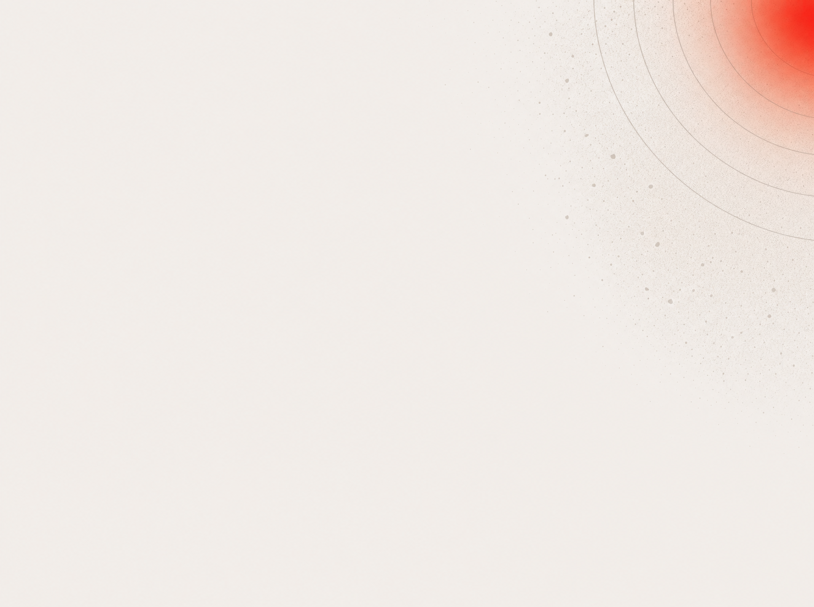

PP.MEDIA · И_И_ · модель ротации
Фокус
внимания
.
ВЕСЬ ПОРТФЕЛЬ · ~100 ПРОЕКТОВ
ТРИАЖ
раз в день
по сигналам
ФОКУС СЕГОДНЯ · ~ЧЕТВЕРТЬ
Проект А
подошёл срок гейта
Проект Б
отклонение от плана
Проект В
давно не открывали, копит риск
остальные ~75 проектов в фоне до своего срока
ФОКУС ВНИМАНИЯ
КАК ВЫБИРАЮТСЯ ПРОЕКТЫ В ФОКУС
01
СРОК ГЕЙТА
подошла дата
контрольной точки,
нужно решение
02
ОТКЛОНЕНИЕ
пошло не по плану,
расхождение надо
разобрать
03
РИСК ПРОСТОЯ
давно не трогали,
копит риск
и проблемы
04
СЛОЖНОСТЬ LEGACY
чем дольше забыт,
тем дороже потом
в него вернуться
!
Итог
Контролировать сто проектов разом нельзя: внимание не масштабируется.
ИИ не расширяет внимание. Он каждый день наводит его на проекты, что важны именно сегодня.